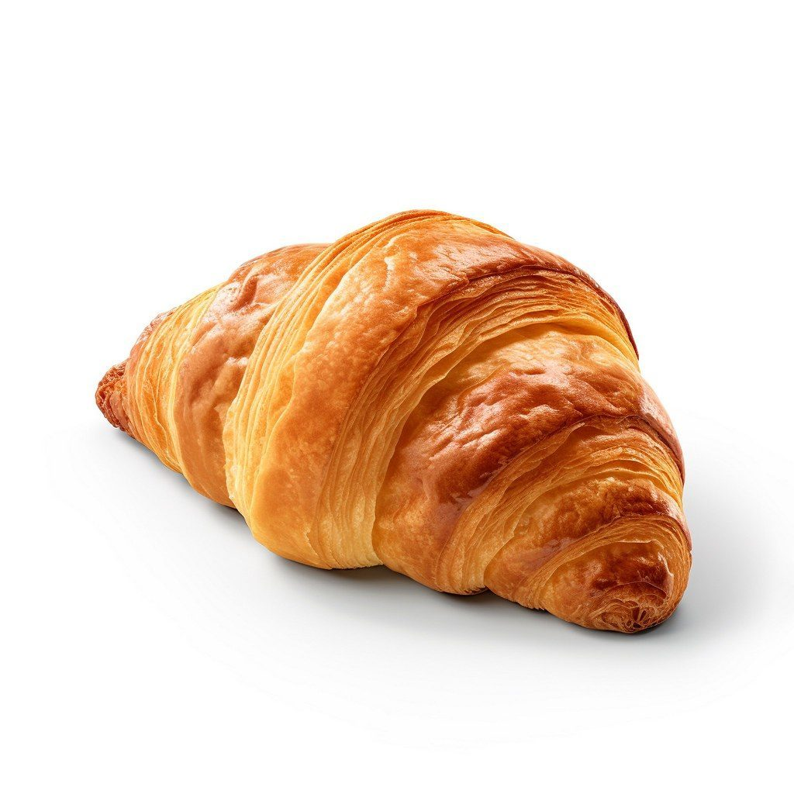
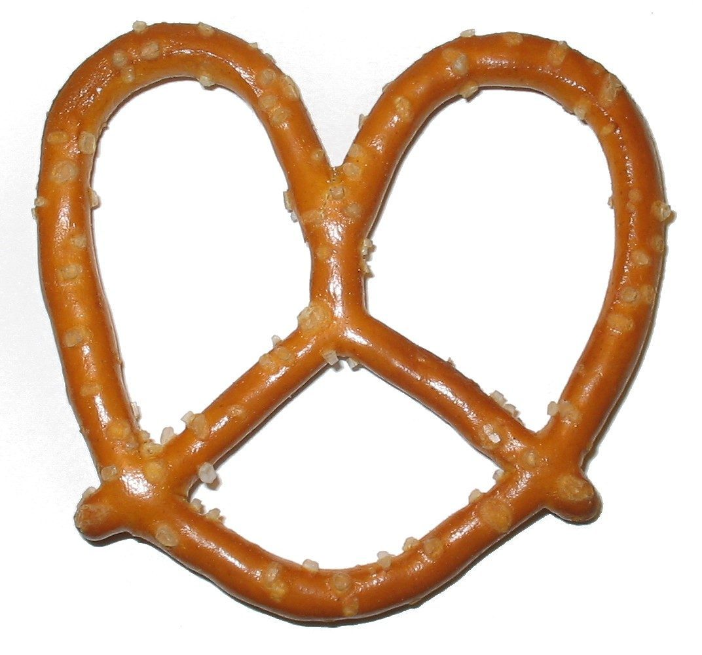
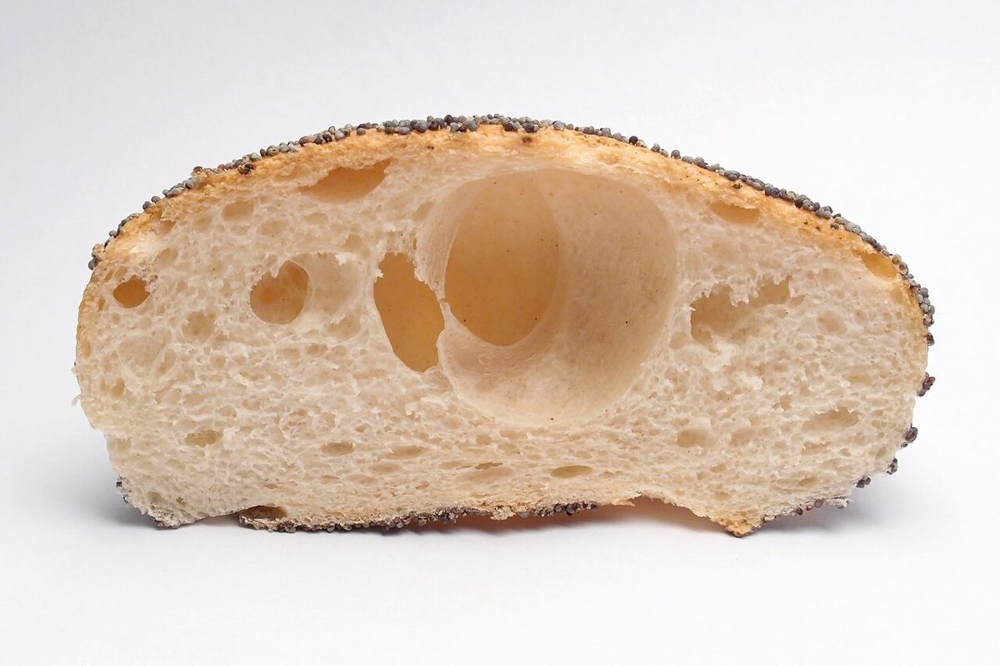
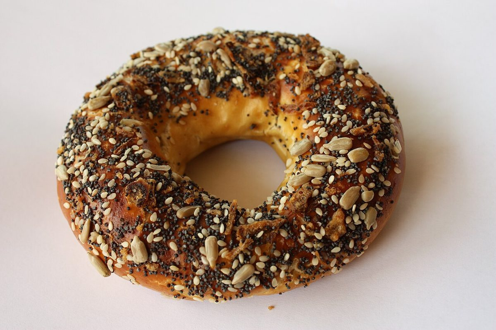

制作側の連想
玉・糸・玉・糸の首飾り
店名の由来は分かりません。制作側は「ブージー」というカタカナの並びに目を留めました。「ブ」と「ジ」には濁点が付き、「ー」は二つあります。濁点のある字を玉、のばす棒「ー」を糸に見立てると、玉・糸・玉・糸と交互に並ぶビーズの首飾りになります。このサイトはその見立てで作りました。制作側の連想で、お店の理念・由来とは無関係です。
- ブ玉1
濁点のある字 - 糸1
のばす棒「ー」 - ジ玉2
濁点のある字 - 糸2
のばす棒「ー」
写真の玉つなぎ(イメージ)
パンとコーヒー豆の五つの玉
写真はお店のものではありません。撮影地不明のフリー素材で、色や形のイメージとして並べています。

クロワッサン(イメージ) 
プレッツェル(イメージ) 
ロールパンの断面(正面)(イメージ) 
種つきのベーグル(イメージ) 
コーヒー豆(イメージ)
ご案内
お店のこと(確認できたものだけ)
| 所在地 | 〒519-4324 三重県熊野市井戸町341-5 |
|---|---|
| 電話 | 0597-89-5051 |
| 営業時間 | 準備中 |
| 定休日 | 準備中 |
| ご予約 | 準備中 |
| 駐車場 | 準備中 |
| SNS | Instagram @cafe.bougie.iii |